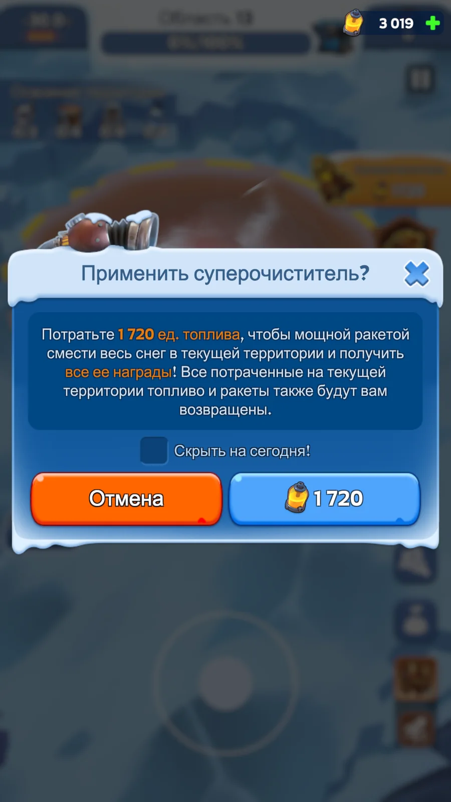
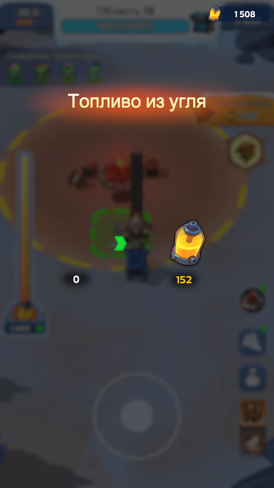
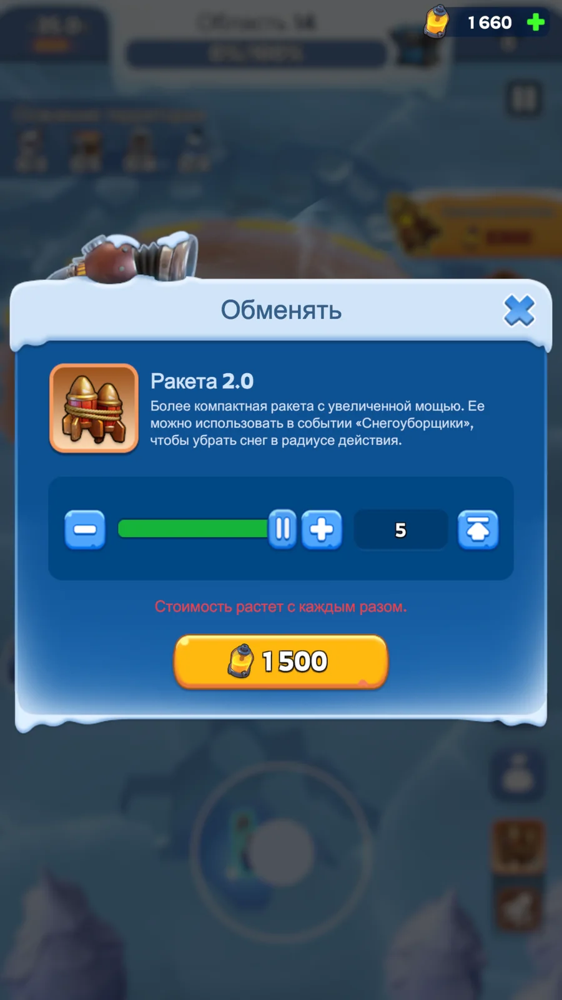
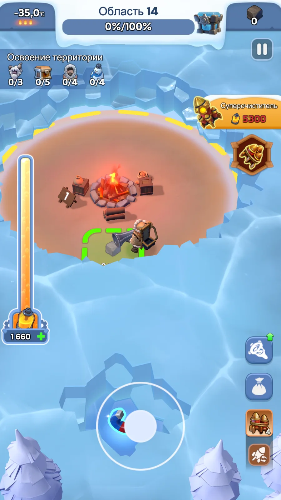
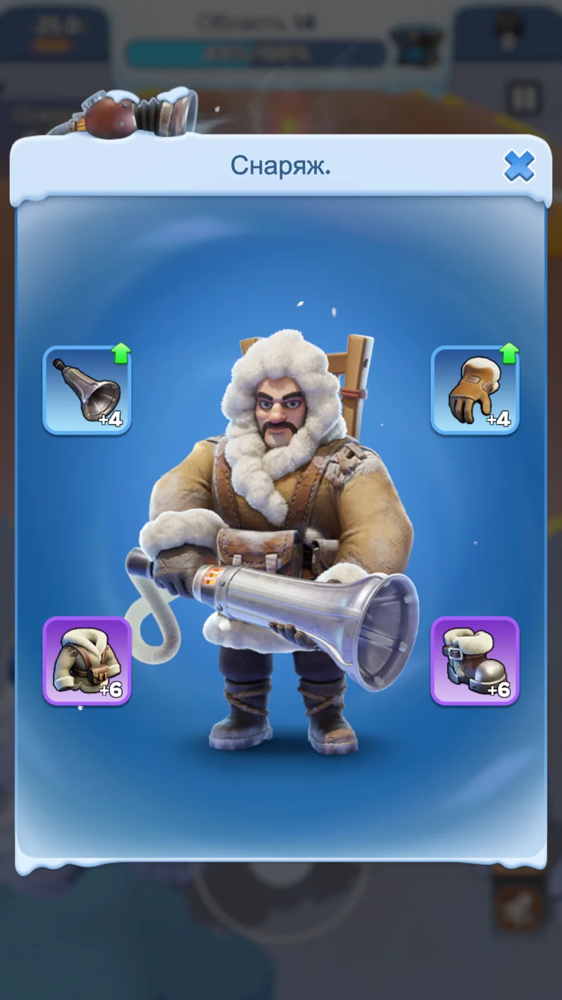

При правильной экономии топлива F2P может пройти 19-й этап включительно. Главная задача — не распылять топливо на необязательные цели и сохранить темп прохождения.
1. Суть стратегии
Обычные этапы — Суперочиститель. Бонусные — вручную. За счёт стартового и подарочного топлива этот отрезок закрывается примерно за 15 минут.
После 13-го топливо заканчивается. Ждём восстановления. Главный ранний апгрейд — Пальто, остаточные очки — в Сапоги.
Перед ручной зачисткой запускаем минимум 4 ракеты, собираем уголь, поднимаем печь и затем балансируем ракеты с ручной зачисткой.
Смысл маршрута — очень быстро проскочить дешёвую часть события, как можно раньше разогнать восстановление топлива и не тратить основной запас на дорогой снег до подготовки печи.
2. Два диапазона этапов
Обычные этапы закрываем Суперочистителем. Бонусные этапы 5 и 10 проходим вручную. 13-й — последняя обычная комната, где Суперочиститель имеет смысл нажимать.
Сначала запускаем минимум 4 Ракеты 2.0, за их счёт открываем карту и уголь, как можно раньше повышаем печь, затем вручную добираем 95%. Дополнительные ракеты — по ситуации.
3. Быстрый старт: до 13-го примерно за 15 минут
- Заходим в событие сразу после его запуска и забираем стартовое/подарочное топливо.
- Обычные комнаты 1–13 последовательно закрываем Суперочистителем.
- Бонусные комнаты 5 и 10 обязательно проходим вручную и используем бесплатные расходники.
- Первые очки снаряжения направляем прежде всего в Пальто. Если очков не хватает на следующий уровень Пальто — остаток временно отправляем в Сапоги.
- Следующий приоритет после разгона Пальто и Сапог — оружие.
- При нормальном старте подарочного топлива хватает практически идеально, чтобы за один короткий заход дойти до конца 13-го этапа.
- После этого запас топлива обнуляется или почти обнуляется — выходим и ждём его восстановления.


4. Суперочиститель даёт кэшбэк
Суперочиститель удобен на ранних этапах не только скоростью. После автозачистки игрок получает весь уголь, который был спрятан на карте. Уголь, который не понадобился для прокачки печи, при завершении этапа конвертируется в топливо.
5. Этапы 14+: минимум четыре ракеты до ручной зачистки
С 14-го этапа стоимость Суперочистителя уже слишком высока. Здесь задача меняется: сначала максимально дёшево раскрыть карту, получить уголь и поднять печь, а уже потом вручную расходовать топливо.
- В начале этапа покупаем и запускаем минимум 4 Ракеты 2.0. Цена покупки растёт с каждым разом, поэтому четыре — базовый минимум, а не обязательный максимум.
- После каждого взрыва быстро собираем открывшийся уголь и при первой возможности повышаем печь.
- Ручную зачистку не начинаем на холодной карте, если следующая ракета ещё может дешёво открыть уголь и приблизить новый уровень печи.
- После серии ракет переходим к ручной зачистке уже при более высокой температуре и заметно меньшей стоимости снега.
- Дальше балансируем: если ракета выгоднее ручного топлива — используем её; если нужная зона уже подготовлена — дочищаем вручную.
- На 95% прекращаем тратить топливо и завершаем этап штатной Ракетой V2.


6. Награды: карта отдельно, прохождение отдельно
Для практической стратегии удобно разделять награды на две группы. Первая — дополнительные награды непосредственно на карте: сундуки, звери, снеговики, замороженные выжившие и другие объекты. Вторая — награда за сам факт прохождения этапа: достаточно довести очистку до 95%, после чего Ракета V2 убирает остаток и этап засчитывается завершённым.
Это не означает, что карта бесполезна: звери дают коллекционные карты, снеговики могут вернуть топливо и уголь, а выжившие увеличивают радиус. Но если выбор стоит между «добрать всё на текущей карте» и «сохранить топливо для следующего этапа», в F2P-маршруте выбираем продвижение.
7. Снаряжение: Пальто → Сапоги → оружие

- Пальто — первый и главный апгрейд: ускоряет восстановление топлива, поэтому каждый ранний уровень работает до конца события.
- Сапоги — второй практический приоритет: скорость особенно ценна во время бесплатных окон и при перебежках между расходниками.
- Оружие — следующий приоритет после разгона экономики и мобильности.
8. Олень и бесплатные окна
Олень прибегает строго после повышения печи до 4-го уровня. Это удобно использовать как ориентир: сначала доводим печь до 4, затем уже планируем работу с оленем и его гарантированным Безлимитным Топливом.
- После появления оленя не убиваем его в случайном месте. Подводим к подготовленной зоне короткими атаками: нажали → отпустили → дали остановиться → повторили.
- Из оленя гарантированно выпадает Безлимитное Топливо. Убиваем его там, где рядом оставлен большой массив дорогого снега.
- Если рядом есть воронка, сначала используем её ускорение и расширение радиуса, затем подбираем Безлимитное Топливо.
- Во время бесплатного окна не бегаем по пустой карте: маршрут и рабочая зона должны быть подготовлены заранее.
9. Полезные микро-фишки
- Сводите цели вместе. Заманивайте зверя к замороженному человеку или снеговику, чтобы одновременно работать по нескольким объектам.
- Крутитесь вокруг цели. Пока освобождаем человека, разбираем снеговика или бьём зверя, одновременно снимаем снег вокруг.
- Точечно прокапывайтесь. Узкий проход к важному углю, расходнику или нужной зоне часто выгоднее широкой зачистки.
- Не добирайте 100% вручную. На 95% штатная Ракета V2 завершает карту.
- Не гонитесь за побочными наградами ценой следующего этапа. Для F2P главный KPI — дойти до 19-го.
10. Финальный алгоритм
Сразу после запуска события забираем подарочное топливо.
Примерно за 15 минут проходим обычные этапы 1–13 Суперочистителем; бонусные 5 и 10 — вручную.
Снаряжение: Пальто в приоритете, остаток — Сапоги, затем оружие.
Получаем кэшбэк Суперочистителя: весь уголь забираем, неизрасходованный уголь превращается в топливо.
После 13-го топливо заканчивается — ждём восстановления. Суперочиститель больше не используем.
На каждом этапе 14+ перед ручной зачисткой запускаем минимум 4 ракеты.
Ракеты открывают уголь → собираем его → как можно раньше поднимаем печь → только потом тратим основное топливо вручную.
Дальше балансируем ракеты и ручную зачистку, используем бесплатные окна и не тратим топливо на лишние обходы.
На 95% завершаем этап Ракетой V2. Цель F2P — стабильно закрыть 19-й этап включительно.